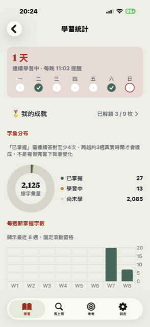
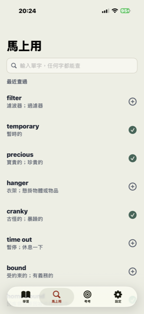
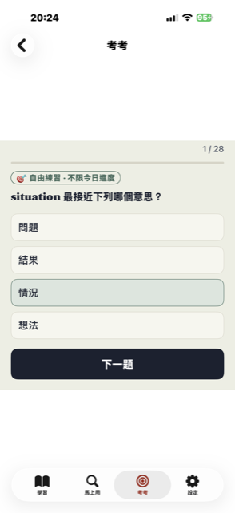

拾字 · 裝置端 AI 英文單字學習
一個字，一個字，撿回來
拾字用 AI 幫你拆解每個單字的字根字源，畫出一個好記的圖像聯想—— 不是死背拼字，是先懂「為什麼是這個意思」。所有運算都在你的裝置上完成， 不連網路、不留紀錄。
01
字根拆解
看懂單字是怎麼「組」出來的
02
圖像聯想
一個畫面把發音、拼字、意思黏在一起
03
完全離線
裝置端 AI 運算，資料不離開你的手機

學習統計 · 打卡與成就

馬上用 · 任何字都能查

考考 · 自由練習